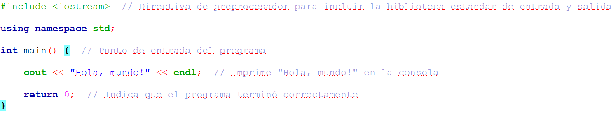

Un programa básico en C++ sigue una estructura general que incluye elementos clave como las directivas de preprocesador, la función principal main, y un valor de retorno.
Ejemplo:

"Hola mundo" en C++.
Tipos de Datos y Variables:
En C++, los tipos de datos definen el tipo de valores que puede almacenar una variable. Aquí están algunos de los tipos básicos:
Int: Almacena números enteros (por ejemplo, int edad = 25;).
Float: Almacena números de punto flotante (decimales) con precisión simple (por ejemplo, float altura = 1.75;).
Double: Almacena números decimales con doble precisión (por ejemplo, double pi = 3.14159;).
Char: Almacena un solo carácter (por ejemplo, char inicial = 'A';).
Bool: Almacena valores de verdad (verdadero o falso) (por ejemplo, bool esAdulto = true;).
Operadores Aritméticos:
+ (suma): Suma dos valores (a + b).
- (resta): Resta dos valores (a - b).
* (multiplicación): Multiplica dos valores (a * b).
/ (división): Divide dos valores (a / b).
% (módulo): Calcula el resto de la división de dos valores (a % b).
Operadores de Comparación:
== (igual): Compara si dos valores son iguales (a == b).
!= (diferente): Compara si dos valores son diferentes (a != b).
< (menor): Compara si un valor es menor que otro (a < b).
> (mayor): Compara si un valor es mayor que otro (a > b).
<= (menor o igual): Compara si un valor es menor o igual que otro (a <= b).
>= (mayor o igual): Compara si un valor es mayor o igual que otro (a >= b).
Operadores Lógicos:
&& (and): Compara si dos valores son verdaderos (a && b).
|| (or): Compara si uno o ambos valores son verdaderos (a || b).